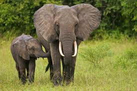

Elephants: An Endangered Species
The largest land mammal on earth, the African elephant weighs up to eight tons. The elephant is distinguished by its massive body, large ears and a long trunk, which has many uses ranging from using it as a hand to pick up objects, as a horn to trumpet warnings, an arm raised in greeting to a hose for drinking water or bathing. Elephants are hunted and used for their ivory tusks which makes them valuble. Every day more and more elephants die due to hunters as well as natural causes. Help save the elephants by donating to charities for elephant reserves.
Why are they important?
Elephants play an important role in maintaining ecosystems. During dry seasons, they dig into the ground with tusks and find water which does not only help themselves but also the other animals that live in those dry areas. And when forest elephants eat, they create gaps in vegetation which allows new plants to grow. Wherever elephants live, they always benefit their ecosystems in some way.

Donate Today!
One of the best ways to help these endagered animals is to donate to organizations. These foundations directly fund the conservation sites that help work with these elephants. These volunteers can rehabilitate injured elephants and release them back into the wild where they belong to live long and happy lives.
For example, the African Wildlife Foundation works with communities who lives closely with wildlife, to recruit, train, and equip wildlife scouts. Scouts monitor elephants and can prevent them from destroying crops, thereby preventing farmers from viewing them as pests, Scouts are also instrumental in deterring poachers. As a result, the African Wildlife Foundation can ensure enhanced protection of wildlife in these regions, like the Osupuko and Kitome Conservancies in Kenya. 11 of the 14 of the elephant populations the African Wildlife Foundation works with are now stable or increasing.